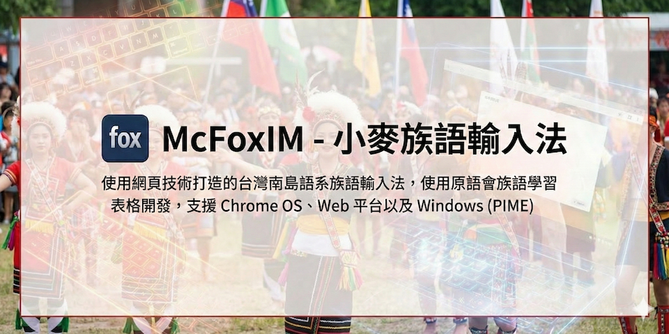

@openvanilla/mcfoximmweb
McFoximWeb - 小麥族語輸入法 Web/Chrome OS/PIME 版本


基於原住民族語言發展基金會的族語學習詞表，以及 Web 技術打造的族語輸入法。

支援平台
- Web 平台
- Chrome OS
- Windows (透過 PIME 輸入法框架)
編譯方式
這套輸入法使用 TypeScript 開發，所以在 Windows、macOS、Linux 平台上都可以編譯。請先安裝 Node.js 以及 Git，然後在終端機中執行編譯命令。
大部分的 Node.js 版本應該都可以成功編譯這個專案，您也可以查看我們在 CI/CD 中使用的 Node.js 版本。
Web 版
小麥族語輸入法提供 Web 版本，適合在連接網路與實體鍵盤，但是不方便安裝輸入法的環境下使用。例如公共電腦、學校教室、iPad 平板，以及各種有鍵盤的電子紙裝置等。由於不需要額外安裝輸入法，也適合用在教學場合。網頁版本採用簡單的色彩，避免額外的漸層、動畫，以及其他可能會對閱讀造成干擾的元素，讓使用者可以專注在輸入法的使用上，而且特地配合電子紙裝置。
編譯 web 版時，請輸入：
npm install
npm run build
用瀏覽器打開 output/example/index.html 就可以使用輸入法了。
您也可以透過參考 output/example/index.html 裡頭的方式，將小麥族語輸入法嵌入到您的網頁中。
Chrome OS 版
您可以從 Chrome Web Store 下載安裝。
如果要要自行編譯，請在終端機中執行：
npm install
npm run build:chromeos
然後在 Chrome OS 上開啟「chrome://extensions/」，並啟用「開發人員模式」，接著按下「載入已解壓縮的擴充功能」，選擇 output/chromeos 目錄，就可以安裝輸入法了。您可以選擇將 output/chromeos 傳到你的 Chrome OS 裝置上，或是直接在 Chrome OS 上使用 Linux 子系統（Crostini）編譯。
Windows (PIME)
首先您要在您的 Windows 系統上安裝 PIME，請前往 PIME 的專案頁面下載。請注意，在安裝的過程中，務必要勾選 Node.js 支援，否則無法使用這個輸入法— PIME 預設是不安裝 Node.js 支援的。
請在 Windows 的命令提示字元（Command Prompt）或 PowerShell 中執行：
npm install
npm run build:pime
然後將 output/pime 目錄下的所有檔案複製到 PIME 安裝目錄下的 node\input_methods\mcfoxim 目錄中（通常是 C:\Program Files (x86)\PIME\node\input_methods\mcfoxim），您會需要用到系統管理員權限。第一次使用時，請在這個目錄中，執行一次 run_register_ime.bat，將小麥族語輸入法註冊到 Windows 系統中。接著重新啟動 PIME 啟動器（PIME Launcher），就可以在輸入法清單中選擇小麥族語輸入法了。
如果在系統清單中，沒有看到小麥族語輸入法，請進入 Windows 的系統設定中，確認「語言」設定中已經加入了小麥族語輸入法。
驗證指令
開發時常用的驗證指令如下：
npm run ts-build
npm run test -- --runInBand
npm run eslint
如果要產生 coverage，可以另外執行：
npm run test:coverage
輸入法使用方式
小麥族語輸入法，其實比較接近以字母為基礎的語言的自動完成（auto-complete）功能。
- 在開始輸入的時候，只要直接輸入字母即可
- 如果有可以自動補完的字詞，就會出現候選字選單—旁邊也有對應的中文說明
- 這時候按下 Tab 鍵，就可以補完單字
- 另外，也可以用上下鍵移動要選擇的候選字，或是用 page up / page down 換頁。
您可以直接在 網頁版本 中，體驗這個輸入法的使用方式。
支援語言
輸入法提供原語會的族語學習詞表所涵蓋的語言。
社群公約
我們採用了 GitHub 的通用社群公約。公約的中文版請參考這裡的翻譯。
常見問題
Q: 輸入法的資料來源？
A: 來自原語會的學習詞表，以及族語 E 樂園的學習詞表
Q: 是否有 Windows、macOS、iOS、Android 版本？
A: 原語會本身也已經提供了這些平台的官方族語輸入法。這個版本主要提供官方所支援的其他平台。
Q: 小麥族語輸入法與另外的族語輸入法有什麼不同？
A: 原語會的族語輸入法是族語會所提供的官方輸入法，小麥族語則是由 OpenVanilla 社群為了官方沒有涵蓋到的平台而開發。
Q: McFoxIM 這個名字的意思？
A: 在 ISO 639 語言代碼中，fox 就是台灣南島民族語言的代號，IM 則是 Input Method 的縮寫，合起來就是 McFoxIM。請參見 Wikipedia 上的 ISO 639-5 、Formosan languages 詞條、以及 SIL 官方 的說明。
Q: 授權方式？
A: 本專案程式碼採用 MIT License 授權，詳情請見 LICENSE 檔案。資料表格授權請參考族語 E 樂園創用 CC 授權。
Q: 怎樣更新輸入法表格？
A: 請參考 tools/README.md 中的說明。